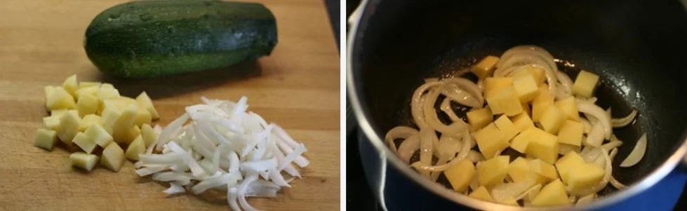
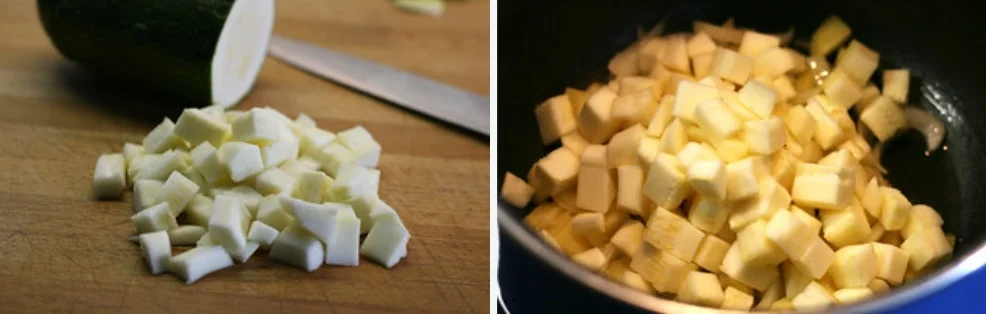
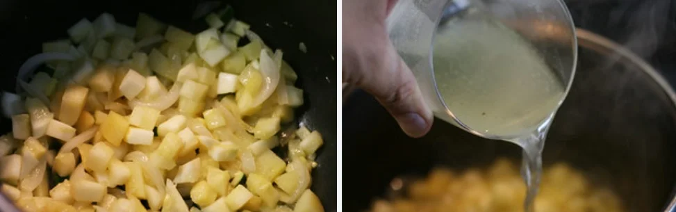
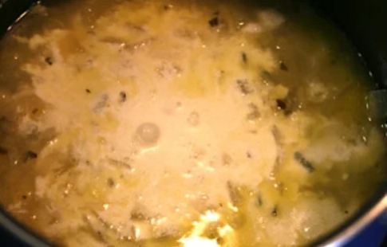

Paso a Paso
-
Paso 1: Comenzamos por pelar la cebolla y picarla en juliana. Lavamos la patata, la pelamos y la cortamos en dados. En una cazuela con una lámina de aceite de oliva virgen extra. Las sofreímos durante 5 minutos a fuego medio. Salamos al gusto.
 -
Paso 2: Cortamos los calabacines en varios trozos. Con un cuchillo bien afilado vamos quitando la piel, y luego los picamos en dados pequeños. Los añadimos a la cazuela.
 -
Paso 3: Mezclamos y seguimos cocinando unos 5 minutos a fuego medio. Salamos ligeramente de nuevo. Vertemos ahora el caldo de verduras de modo que cubra todas las verduras.
 -
Paso 4: Cocemos 20 minutos a fuego medio. Pasado el tiempo retiramos del fuego y añadimos la nata y mezclamos bien.
 -
Paso 5: Trituramos con la batidora y vamos comprobando el punto de la crema. Para decorar añadimos un poco de perejil fresco picado.